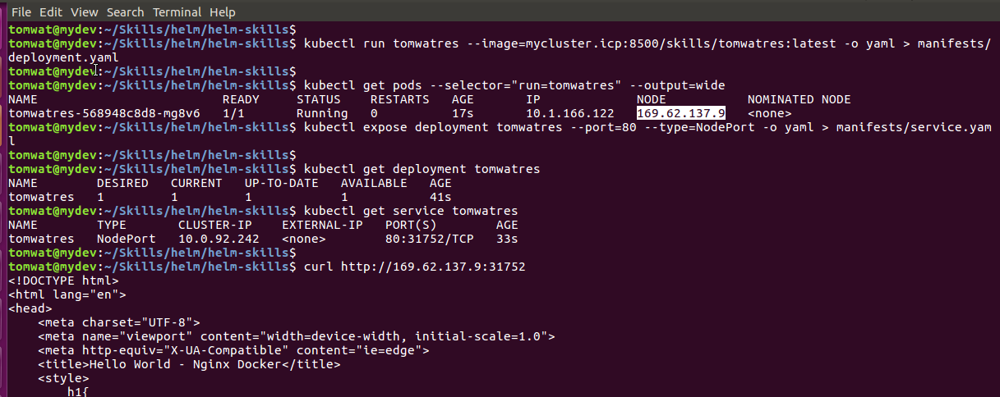

Helm packages up all the complex syntax.
http://tech.paulcz.net/blog/getting-started-with-helm
Writing a Helm Chart is easier when you start with an existing set of Kubernetes manifests.
One of the easiest ways to get a basic working manifest is to ask Kubernetes to run something
and then fetch the manifest.
$ mkdir manifests
$ kubectl run example --image=nginx:1.13.5-alpine -o yaml > manifests/deployment.yaml
$ kubectl expose deployment example --port=80 --type=NodePort -o yaml > manifests/service.yaml
Note - default-image-policy must allow image uploads from docker.io/*
Note - this worked with namespace=default but not namespace=tomwatres
